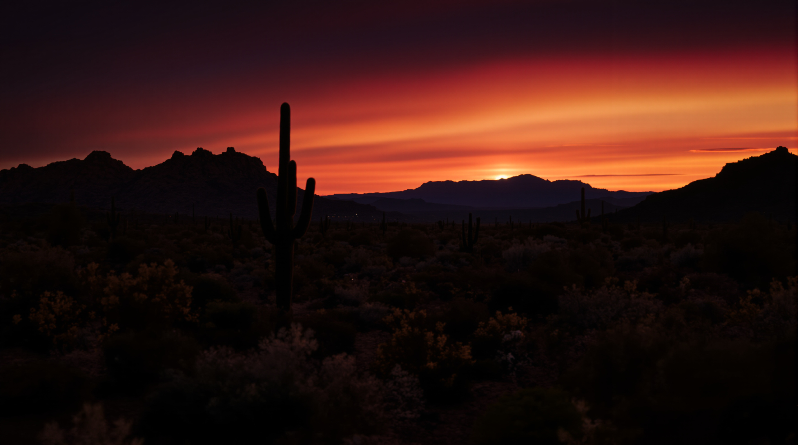

01 · The Hero
Three candidates. One ships.
The current image is a Midjourney sunrise — pretty but with the soft over-rendered look that signals AI. Both FLUX 1.1 Pro Ultra regenerations are photographic in feel. They're different moods, not different quality tiers.

